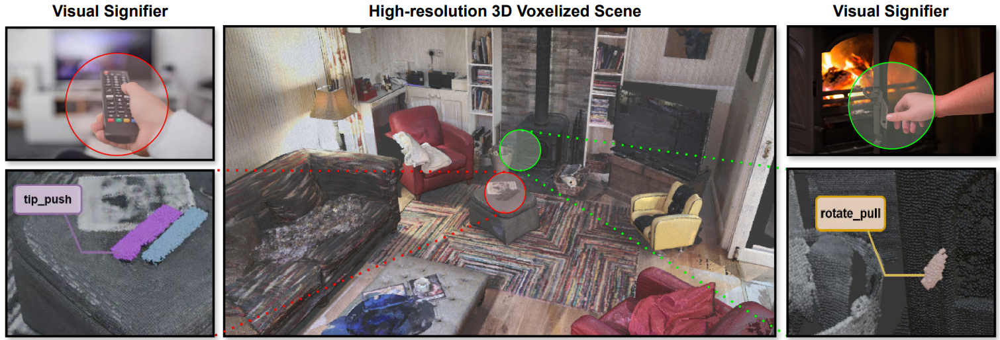
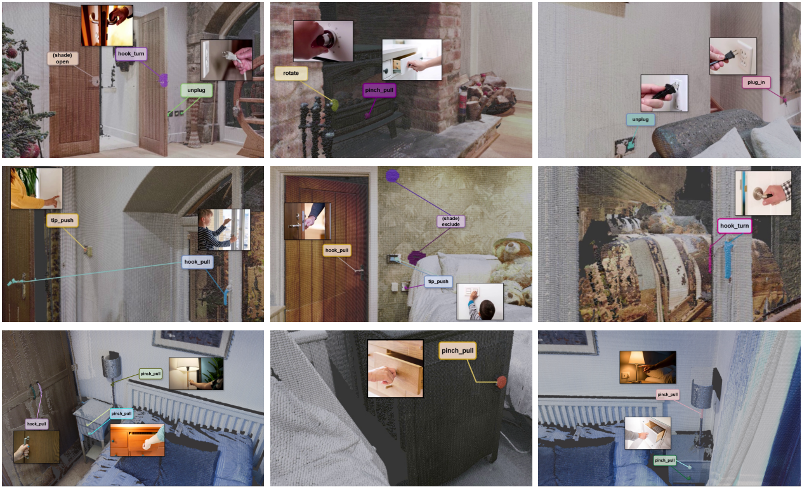
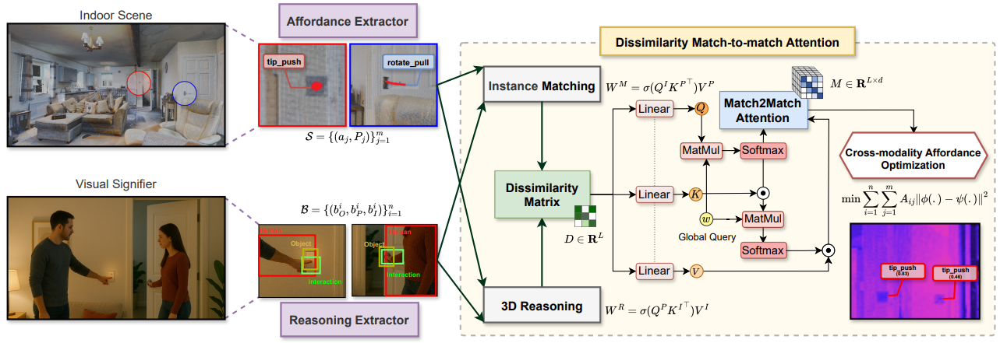

AffordMatcher: Affordance Learning in 3D Scenes from Visual Signifiers
Nghia Vu†,2,
Tuong Do†,1,2,3,
Khang Nguyen4,
Baoru Huang1,7,
Nhat Le5,
Binh Xuan Nguyen2,
Erman Tjiputra2,
Quang D. Tran1,2,
Ravi Prakash6,
Te-Chuan Chiu3,
Anh Nguyen1
†Equal contribution 1University of Liverpool, UK 2AIOZ Ltd., Singapore 3National Tsing Hua University, Taiwan 4MBZUAI 5University of Western Australia 6Indian Institute of Science 7NVIDIA
Affordance learning is a complex challenge in many applications, where existing approaches primarily rely on geometric structures, visual knowledge, and affordance labels of objects to determine interactable regions. Extending this capability to full scenes is significantly more challenging because incorporating both object-level and scene-level semantics is not straightforward. In particular, 3D instance identification often struggles with small but functional components such as knobs and handles that are crucial for interaction.
In this work, we introduce AffordBridge, a large-scale dataset containing 291,637 functional interaction annotations across 685 high-resolution indoor scenes represented as point clouds. The affordance annotations are complemented by RGB images linked to the same scene instances, enabling multi-modal reasoning.
Building upon this dataset, we propose AffordMatcher, a novel affordance learning framework that establishes semantic correspondences between image-based and point-cloud-based instances through keypoint matching. By leveraging visual signifiers from RGB images and aligning them with 3D scene geometry, our method enables more accurate localization of interaction regions within complex environments. Experimental results demonstrate that AffordMatcher significantly improves affordance detection performance compared with existing approaches.

Figure 1. Overview of AffordMatcher.
The AffordBridge Dataset
We introduce AffordBridge, a large-scale dataset designed for learning affordances in complex 3D environments by linking visual interaction cues with 3D scene geometry.
The dataset bridges 2D visual signifiers, language descriptions, and 3D point-cloud representations, enabling models to reason about human-object interactions directly in full 3D scenes.
Our annotation pipeline consists of three stages:
3D Scene Processing.
We start from high-resolution indoor scans and represent each scene as a colored point cloud with spatial coordinates, RGB values, and surface normals.
The point clouds are downsampled to 100K points using voxelization to preserve geometric details while maintaining computational efficiency.
Instance segmentation is applied to extract individual objects, and RGB video frames captured during scanning are aligned with the 3D scene using SLAM-based camera trajectory estimation, producing reliable 2D–3D correspondences.
Visual Signifier Processing.
To capture interaction cues, we collect human-object interaction images and annotate three bounding boxes for the human, object, and interaction region.
Human pose estimation is used to refine hand-object contact regions, and each interaction is paired with a fine-grained caption describing the action (e.g., “A man opens the black door”).
These captions provide semantic context for linking visual interactions with 3D scene elements.
Affordance Annotation.
We align images, captions, and 3D instances using CLIP-based similarity and contrastive learning.
Annotators then assign affordance labels to the corresponding object regions directly in the 3D point cloud through an interactive annotation interface.
To handle ambiguous matches, the system retrieves the top candidate objects and human annotators verify the correct interaction region.

Figure 2. AffordBridge Dataset Visualization.
Dataset Scale.
AffordBridge contains 689 indoor 3D scenes, 9,870 visual interaction cues, and 291,637 affordance annotations.
In total, the dataset provides 317.8K training samples spanning image cues, language descriptions, and 3D geometry.
The dataset is split into:
Training: 206.6K samples
Validation: 63.6K samples
Test: 47.7K samples
The object distribution includes common indoor objects such as chairs, cups, buttons, lights, books, tables, and boxes, providing diverse affordance contexts for both object-level and scene-level interaction reasoning.
Criteria
Train
Validation
Test
Total
Visual Signifiers
6,416
1,974
1,480
9,870
3D Scenes
448
138
103
689
Affordance Areas
189,564
58,327
43,746
291,637
Total Samples
206.6K
63.6K
47.7K
317.8K
AffordMatcher Methodology
We propose AffordMatcher, a cross-modal framework for zero-shot affordance segmentation in 3D scenes using visual interaction cues.
The core idea is to align visual signifiers of human-object interactions with spatial affordance regions in 3D point clouds.
Instead of directly predicting affordances from geometry alone, AffordMatcher reasons jointly over 2D interaction semantics and 3D scene structure to identify actionable regions.
Our architecture consists of two complementary components: a Reasoning Extractor that encodes interaction cues from visual signifiers and an Affordance Extractor that identifies candidate interaction regions within the 3D scene.
These representations are aligned through a cross-modal reasoning pipeline that enables robust instance matching between modalities.

Figure 1. Design architecture of AffordMatcher.
Problem Formulation.
We formulate affordance grounding as a cross-modal alignment problem between visual interaction cues and spatial regions in a 3D scene.
Given a point cloud representation of the environment and an RGB image containing interaction cues, the objective is to associate each visual cue with its corresponding affordance region in 3D space.
To achieve this, AffordMatcher learns a shared embedding space that minimizes the discrepancy between semantic interaction features and geometric affordance representations.
Feature Extraction.
AffordMatcher processes both visual and spatial inputs through dedicated feature extractors.
Reasoning Extractor. Visual interaction cues are encoded using a ViT-B/16 backbone that captures semantic context from human-object interactions. Human pose information can be incorporated to emphasize interaction dynamics such as hand-object contact.
Affordance Extractor. The 3D scene is represented as a voxelized point cloud and processed using a PointNet++ backbone to extract geometric features for candidate interaction regions.
Both modalities are projected into a shared embedding space to enable cross-modal reasoning.
Instance Matching and Cross-Modal Reasoning.
To establish correspondences between visual cues and spatial regions, AffordMatcher applies bidirectional cross-modal attention.
Visual features attend to spatial features to localize potential affordance regions, while spatial features attend back to visual cues to propagate contextual reasoning from the 3D scene.
This process produces representations that jointly encode semantic interaction information and geometric spatial structure.
Dissimilarity Matrix Construction.
The correspondence between visual signifiers and candidate 3D regions is quantified using a cross-modal dissimilarity matrix.
Each entry measures the cosine dissimilarity between the visual interaction features and spatial affordance features.
The matrix captures the global matching relationships between all interaction cues and candidate regions in the scene.
Match-to-Match Attention.
To reason over multiple potential matches, the dissimilarity matrix is flattened and processed using a FastFormer-style self-attention module.
This module, referred to as Match2Match attention, allows the network to refine correspondence predictions by jointly considering all candidate matches.
The mechanism is particularly effective in cluttered environments where a single interaction cue may correspond to multiple potential objects.
Cross-Modal Affordance Learning.
To train the model, AffordMatcher employs several complementary objectives:
Embedding Regularization. Visual and spatial embeddings are constrained to lie on a unit hypersphere to maintain stable representation geometry.
Semantic Alignment. Predicted matches are aligned with pseudo-target embeddings derived from CLIP-based semantic representations.
Bidirectional Consistency. Two projection heads enforce mutual mapping between visual and spatial embeddings, reducing modality gaps.
Dissimilarity Minimization. A cross-modal dissimilarity loss directly penalizes mismatched attention features.
The final training objective combines these losses to jointly optimize cross-modal alignment and affordance localization.
Zero-Shot Affordance Localization.
During inference, AffordMatcher extracts interaction cues from visual signifiers and identifies corresponding affordance regions within the 3D scene.
Through cross-modal reasoning and Match2Match attention, the model predicts spatial masks and bounding boxes that localize actionable regions.
This enables robust zero-shot affordance segmentation, allowing the system to generalize to previously unseen environments and interactions.
Experiments & Evaluation
We evaluate AffordMatcher on the task of zero-shot 3D affordance segmentation, where the goal is to localize functional interaction regions in 3D scenes given visual interaction cues. Our evaluation focuses on both quantitative performance and cross-modal reasoning capability.
Implementation Details.
The model is trained for 100 epochs using RGB images, 3D point clouds, and interaction descriptions. Training is performed on a single NVIDIA RTX 3090 GPU with a batch size of 16 and an initial learning rate of 1e−4, decayed by a factor of 0.5 every 30 epochs.
RGB images are resized to 224 × 224 with standard augmentations, while 3D scenes are voxelized into a 64³ grid. A pre-trained 3D segmentation model is used to generate candidate affordance masks.
Evaluation follows standard affordance segmentation metrics:
mAP@0.25
mAP@0.50
mAP averaged over IoU thresholds from 0.50–0.95
Baselines.
We compare AffordMatcher with several state-of-the-art methods, including functional adaptations of 3D instance segmentation approaches such as Mask3D-F, SoftGroup-F, and OpenMask3D-F.
We also benchmark against full affordance grounding pipelines including AffordPose-DGCNN, 3DAffordanceNet, PIAD, LASO, and Ego-SAG.
Method
mAP
mAP@0.25
mAP@0.50
# Params
Inference Speed (ms)
Mask3D-F
41.2
58.6
47.1
19.0M
126.2
SoftGroup-F
43.9
60.8
49.3
30.4M
288.0
OpenMask3D-F
45.6
62.1
51.0
39.7M
315.1
AffordPose-DGCNN
29.7
47.6
34.8
12.5M
140.2
3DAffordanceNet
34.2
51.3
39.6
15.0M
180.4
PIAD
26.1
44.7
30.5
23.0M
160.9
LASO
37.5
54.2
42.6
21.4M
130.4
Ego-SAG
40.3
56.7
45.1
24.8M
175.3
AffordMatcher (Ours)
53.4
69.7
59.5
20.7M
112.5
Quantitative Results.
AffordMatcher achieves an overall mAP of 53.4, outperforming the previous best baseline by 7.8 points. The improvement is consistent across both low and high IoU thresholds, demonstrating stronger localization of functional affordance regions in complex indoor scenes.
In addition to improved accuracy, the model maintains strong efficiency with 20.7M parameters and 112.5 ms inference time, achieving faster inference than all compared methods. This balance between accuracy and efficiency highlights the scalability of AffordMatcher for large-scale 3D scene understanding.
Reasoning and Ablation Analysis.
To better understand the contribution of visual reasoning, we perform several ablation experiments on different input configurations.
Removing the visual branch significantly reduces performance, decreasing mAP from 53.4 to 37.3. Similarly, removing human-object interaction cues via image inpainting lowers performance to 40.9 mAP, confirming the importance of interaction semantics.
Additional analysis shows that the proposed cross-modal reasoning module produces more compact and separable affordance representations, as observed through t-SNE embedding visualization. These results demonstrate that visual interaction cues provide critical guidance for grounding affordances within complex 3D scenes.
Qualitative Results.
AffordMatcher generates compact and precise affordance masks compared with existing approaches. While prior methods often under-segment interaction regions or produce overly broad masks, our model accurately localizes fine-grained affordances such as handles, switches, and buttons by leveraging cross-modal reasoning between visual cues and spatial geometry.